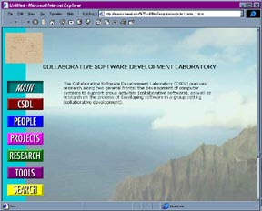
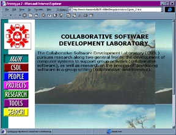
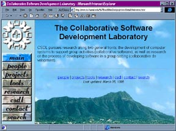
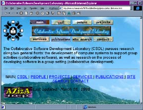
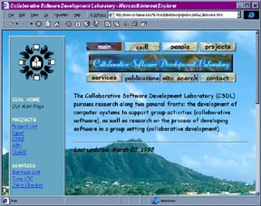
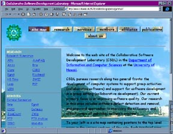

ICS Technical Report 98-05
http://www.ics.hawaii.edu/~csdl/techreports/98-05/98-05.html
| I. | Introduction |
| II. | Planning and Information Gathering |
| III. | Design of the Site's Layout |
| IV. | Development of the Site's Layout |
| V. | Construction |
| VI. | Site Maintenance |
| VII. | Testing |
| VIII. | Site Evaluation |
| IX. | Time and Work Product Analysis |
| X. | Group Dynamics |
| XI. | Areas For Improvement |
| XII. | Conclusions |
| XIII. | Next Steps | XIV. | References |
Since its inception at CERN, the World Wide Web has been intended as a means for real-time collaboration. The desire to collaborate with other around the world formed the backbone of this project, and so the primary level of the WWW has been to share information with others. However, the methods in sharing information have never been standardized, and most likely never will be. It is only with a mix between research and trial-by-error that one can provide an effective web site that can functionally share its information with people all over the world.
It was natural for a group that concentrated on collaboration to use a service that was also based on sharing information. The Collaborative Software Development Laboratory (CSDL) initially published their page during the first generation of web site design. In the early days of the World Wide Web, most information was simply listed in one large page. These sites did not concentrate too much on the structure of the site, or the design of the pages contained within, as the major point of the WWW was to share one's information. The CSDL page had a simple listing of research projects accomplished by the group, as well as reference points to the many publications written by the group. Due to the lower modem speeds and bandwidth issues, a minimum of pictures were used, including only the organization's logo and a group photo.
Unfortunately, as web site design evolved over the years, the CSDL web site did not change along with it. Its layout, which was effective in the early-nineties, was greatly outdated, and the overall feel of the site was monotone and uninteresting. The content of the site was also outdated, as many new projects were not included in the site, and there was no mention of the group losing and adding members during the years. As the web page began to take a new role over the years--that of exhibiting an organization's identity, it was apparent that a change had to be made to the site. The neglect of the web site now had the ability to cause a negative impression of CSDL to be formed by visitors, and this needed to be resolved.
The Aziza group (formally 691 Web Development Team) was commissioned by CSDL to implement a new web site. The group was assigned not only to update the entire site, but also to research and investigate the process and life cycle of World Wide Web site development. This examination into the various methods involved would then become one of CSDL's own research projects.
The updating of the CSDL web site would be used as the basis of this research document. Issues such as the balance between providing information and providing an image of the group would be discussed and examined, and ways to share research information over the World Wide Web would be studied. To back the data researched, evaluations by the various users of the site would be conducted and examined. This document records our web site design processes, what insights we had about those processes, our findings, and finally, our conclusions.
CSDL is a highly prolific organization, in the years that it has existed, they have literally turned out thousands of pages of HTML and documentation. Despite this, though, the design group's first urge was still to sit down and immediately create a web page. We quickly realized, however, that to be able to complete the web site in a relatively short amount of time (one semester) our group needed to organize. Before considering designing pages, we needed to get an overview of the project. To this end, we created a Software Requirements Specification.
The Software Requirements Specification (SRS) gave us a point to start from and outlined our goals; it directed our actions throught the entire design and construction of the site. The SRS was comprised of several informational parts: an overview of the CSDL site as an organization, an evaluation of the then-current CSDL site for its strengths and weaknesses, an evaluation of similar research and development sites for their strength and weaknesses, a determination of the uses and users of the new site, a determination of the goals that the new site should meet, and finally, guidelines for designing the new site. This process, although several weeks long, was well worth the effort.
By collecting information on the CSDL organization and evaluating the then-current site, we familiarized ourselves with the structure of CSDL and with the nature of the information that would need to be organized. The organization of the current site gave us an idea, at least in part, of how the updated site might be presented.
Doing evaluations on both CSDL's site and other similar sites focused attention on what good ideas other web sites were employing and also provided first-hand experience with some ideas and formats not to use. Information that was just as valuable to know as the former.
To determine the uses and users of the new site, the group interviewed each member of CSDL. These interviews clarified for us what the customer (the CSDL members) expected out of the site - who they thought would use it, the information that they wanted available through the site, and a basic idea of how that information was to be presented.
With all of those things in mind, we developed the web site's functional requirements and design guidelines. The purpose of these were to give the group a direction to go in with the development of the new site. Spending time early on to get a good idea of what the new web site needed to do, eliminated doubling back and extra work due to forgetting any needed functionality.
After completing the SRS, we had a fairly good idea of what information the site was to contain, but it was still amorphous. The lines along which CSDL's information would be divided and presented were not yet articulated. To formalize those decisions we created schemas.
For this project's purposes, schemas were detailed listings of the required information for each element of the site. Determining these lists moved the project along on several levels. First, it necessitated the decision of what sections the site would have, i.e. a section on Members, a section for research projects, a section for software tools, etc. This called for a careful consideration of the categories. We wanted the CSDL site to have a firm semblance of structure without being too rigid. It would have been extremely bad design if adding something to the site called for its restructuring. At the same time, it was not desirable to create a miscellaneous section just have a place to put everything that would not conveniently fit into the available categories. Second, the decision of what information each section was to contain provided a template for each section, meaning that each instance of a section would have a formalized structure and an organized, uniform feel.
Overall, the schemas provided an overview of the logical structure of the site. It allowed a visualization of the interlinkings of the different sections and gave a short listing of all information being provided. Once the schemas were completed, individual Aziza members were assigned to put together different informational pages. For instance, Jennifer was assigned to complete the member page of Carleton Moore and the research pages for his projects. Although the layout of the site was not yet complete, the schemas told us what information was needed and how it would be organized on the page.
The development stage of the project concentrated on formalizing two things - navigation and message. While a bad navigational system is never desired, an appropriate one can add an extra dimension to the represented organization. Consider how appropriate it would be for an art dealer to organize their site as an art museum; each wing dedicated to a different style, each room dedicated to an individual artist. From this illustration you can see how closely layout and theme are tied and also how a fitting or complimentary theme can strengthen the overall impact of a site.
The group felt that for such an important and key element of the site (and also because it is in this area where there will be the greatest differences in opinion), the best way to decide on a system was to prototype the different ideas. Also, prototypes gave the CSDL members something concrete to look at and think about. In this manner we were able to show them the look of various options, such as frames vs. no frames and different types of navigational schemes.
The first ideas were limited to paper. We brainstormed extreme ideas of web page design without any regard to the work involved. The prototypes were designed both by the group as a whole and individually. The main idea was to get down as many ideas as possible, from classical and mainstream to avant-garde and wacky. It was almost certain that we would not use any of the first few prototypes, but the real purpose was for everyone to present all of their best ideas, running the gamut from one extreme to the other. As we examined the different navigational paradigms, we liked the ideas, but agreed that the more outlandish ones would prove too difficult to upkeep, and so initially a traditional "side-link" design was chosen.
The first request by Dr. Philip Johnson, our "manager", was for us to incorportate a large photo as the background of the main page. This photo would have clear separations of sky, mountain, sand, and water; each element/section of the picture would correspond to a different section of the web site. This particular idea did not survive, as the group decided that there was a need of more than four sections in the site, and creating a viable image map would be nearly impossible, due to the different video resolutions available.
|  |
Instead, The Aziza group decided to use half of the suggestion: using a large photo as the background. Our first prototype consisted of multi-colored buttons, based on standard colors defined by the W3 organization. The initial idea was to have a side bar of buttons, where the background of the side bar corresponded to the button selected. This would enable the user to know which section they were in, giving both functionality and color to the site. However, this scheme proved to be too gaudy, and the group rejected it almost immediately after prototype completion. |
|
The next prototype used the same idea of multi-colored buttons, but in a frame format. Also, we moved away from the idea of having the entire background as a large picture, and instead split up the screen. More things were added to this prototype, such as a logo and more wording, but all still felt that there was great room for improvement. |
 |
The feeling at this point was that thinking together as a group was leading nowhere, and so we decided to split up and come back with four different ideas from which we might choose from. One idea included using pictures as the back of the buttons, and having a neutral background for the rest of the site. Another idea used an applet that would provide pop-up menus corresponding to the button that the mouse pointer was over. This applet was well received by both the group and Dr. Johnson, so we decided to expand on this idea.
|
The group experimented on different ways of using the navigation buttons as a location indicator, but none did as well as the original applet method. Another avenue of design came forth at this point - the idea of using an antique aloha shirt design as the back of the buttons. The design wrapped across the buttons, and an antique-looking script was used as the font. Despite the fact that this design issue had nothing to do with navigation, all agreed that it looked better than the original button set, and we decided to expand on this. The group used this new site layout along with the java applet, and all felt that the development was coming along nicely. |
 |
|  |
A new point, however, was brought up during the presentation of this layout - that of screen real estate. When looking at the main page from a browser running 640x480, the buttons filled over 1/3 of the screen, which was unacceptable. To solve this problem, it decided to greatly shrink the buttons and put them on the top of the screen rather than down the side. The aloha-shirt design was used again, but use of a different font was needed in order to fit on the smaller buttons. |
|
The group felt that they were close to finalizing the site design, but Dr. Johnson introduced a new design issue--that of having a site map on the screen for navigation. The group implemented this, using the Delta1/Top button prototype, and adding a list of links along the side of the screen. The prototype was presented to Dr. Johnson and the group waited on his approval. |
 |
|  |
An email was sent out by Dr. Johnson to the group, discussing his new vision for the site. Instead of choosing between top navigational buttons and a side site map, the two were to be blended together into one. The CSDL banner was to be removed, and replaced by a logo. The site map was to appear on the main page, giving it a functionality other than that of a welcoming screen, while the navigational buttons would remain at the top of all other child pages in the site. Furthermore, the Comic Sans font was to be used throughout the site, matching the many posters which were made by CSDL. We agreed on these ideas, and implemented it in time for a presentation to the CSDL group. |
During this meeting, some design aspects were brought out by the group members. Perhaps the most controversial aspect of the site was the large picture background, the only design element that had been retained from the original alpha prototypes. It was agreed upon that the picture was too "tourist bureau"-like, and gave the wrong first impression. This picture also made it very hard to read the text, and so the task of finding a new background picture was made definate. The buttons were also scrutinized, and a request for better buttons was made. Because of the changes to the site, the aloha-shirt design did not fit in anymore, and so these were disgarded.
Our design was almost finalized, with only some minor graphical enhancements to be changed. The logo was redone, first using CorelDraw to edit the original .cdr file and include the name of the laboratory. This was then exported into Photoshop and shrunken, keeping both the clarity of the logo, and the compression of the JPEG format together. The buttons were also changed, discarding the original design of the aloha-shirt background. The group saw the problems of having only selected and unselected buttons, so a "focus" indicator was added to our buttons. This indicated if a user was in a section, but not necessarily at the main page of the section. Several prototypes of these buttons were made, and an oval design was finally chosen. The group also decided to obtain better background pictures, and these were chosen from the collection of Douglas Peebles, a professional photographer. His permission to use his pictures on the CSDL site was approved, and a script was run to rotate these pictures daily. Finally, the decision to retire the Comic Sans font from the web site was made. While being popular among some group members, and Dr. Johnson, the font took up too much on-screen real estate, and was not very readable in large blocks of text. It was agreed that the font specifications be left up to the user's browser.
As of this writing, the CSDL web site design consists of oval buttons at the top, with a rotating picture background. This site layout has evolved greatly from our original vision, yet the first idea for the site is still in place: the photo background. Although we were not able to use some of our more innovative ideas, we learned that design of a navigation tool for a web site involves not only the look of the graphics, but also the functionality and ease of upkeep for the site administrator. In an organization where no one is able to devote their time to upkeeping a site, as is the case with CSDL, the graphics should be simple and easy to edit.
Once the final layout for the site was developed, the group was able to get down to the actual building of the new site. Each member of the group had individual assignments of which members, projects, and areas of the site they were to work on. This allowed everyone to work on our own. What this meant, however, was that communication was crucial. Miscommunication could have created inconsistencies, leading to double work fixing mistakes. The time spent working on the SRS, schemas, and etc. would have been for naught.
In an effort to avoid this, our group posted everything it could think of. In this way, all information was always available. The time spent was worth it - especially if a member missed a meeting. With everything available on-line, the member could easily and without hassle, catch up to the rest of the group. Following are the types of documents that we utilized to keep group communication flowing:
Each week the Aziza group had anywhere from one to four meetings. One of the weekly meetings was a class meeting in which the group would meet with Dr. Johnson. The rest of the meetings were group meetings, where the group would get together and iron out project details. Because a great deal of information was discussed during each one of these meetings, it was invaluable to have the meeting notes posted on the web. It allowed us to go back and review decisions at any time of the day or night.
While each meeting was described in detail, it was useful to have a location to keep a "laundry list" of things to do. There was a To Do list for each meeting in which assignments were handed out. The To Do lists had areas for members to insert a "Yes" once a given task was completed. These provided an overall view of both what had been done and what was left to do. It also served as a reminder for who was doing what assignment - occasionally there were times when we would become confused over who was responsible for what task and looked to the To Do lists for clarification.
The General To Do List was put together as the project neared its close and the things left to do could be listed. Its content was added to as things were found that needed to be done and updated as they were completed. Having this list and watching as its items were checked off gave the group a feeling of accomplishment. Each item that was completed was one step closer to a finished web site.
As the project came to a close, deadlines came due quicker and more frequently. Monthly calendars gave us an overview of when things were due in relation to each other. Seeing all of the deadlines on a monthly calendar helped to reinforce how crucial time management would be in the last few months.
Each member of our group kept an accounting of how his or her hours were spent on the project. During the project, it was a useful gauge for how much or how little was accomplished for the week. These summaries also showed in black and white how efficient the group or individual was. If a lot of hours were recorded, but there was little work to show, then something needed to be changed. Conversely, if relatively few hours were being recorded, but a lot was accomplished, then there was an ego boost for the week.
At the end of the semester, keeping the hours allowed the group to view how time was divided between the different types of work and how the work level had its varying high and low points. Keeping this accounting brought home how the type of work changed throughout the project's life time. About half way through the semester we needed to re-define the time categories that had previously been designated.
The following documents were put together for the purpose of coordinating the work methods of four different people. As mentioned earlier, one of the toughest parts of team projects is communication, especially communication of standards. Without standards, it is far too easy to spend time re-doing work that could have easily been done in the correct format the first time. It was for this reason that standards for our work were created.
These refer to general HTML writing standards that the group tried to adhere to while writing the individual pages. This not only included the nitty-gritty of HTML writing, such as using relative links instead of hard-coded links, but also examples of standard headers and footers to be used.
As noted before, each section of the CSDL site had a schema written up for it. Since each instance of a section category, such as each member's page, was to contain generally the same information, it was natural to have produced template pages that contained the basic structure of each type of page, pre-formatted and only waiting for content to be filled in. This cut down considerably the amount of writing that would otherwise have had been done and also on any content inconsistencies.
Trying to maintain a site (even a small one) is a never-ending task. The site adminstrator is forever fixing broken links or adding and changing the contents of the site. Because of this, the Aziza group dedicated a section to site maintenance.
In the FAQ section of the CSDL site, there is a question/link titled "How do I update the site?" Under this link is an index of Manual Pages. This is a listing of pages that give instruction on how to maintain the site: from moving a member to the Ohana section to restarting the server, they provide instruction and information on how to do it all.
This section was created because the process of maintaining a site can often be involved and sometimes confusing. By providing a checklist on how to do things, whomever is the maintainer does not need to have intimate knowledge of the inner working and inter-linkings of the entire CSDL site. They just need to have a fair knowledge of HTML and UNIX commands and can quickly update the site with confidence that they are not missing or forgetting something.
There is also an installed a utility, WebTester 1.05, that checks for broken links and orphaned files on a site-wide basis. It runs nightly and automatically posts its' error results under the FAQ page's question, "What are the results of the most recent link check on the CSDL site?" It is an easy way to keep the site running error-free and smoothly.
Usually, testing and evaluation are combined issues. In respect to the CSDL web site, however, the two have been seperated. In this case, testing refers to internal evaluations such as goal achievement and a few technical concerns.
One method of testing the new site's qualities is to compare it to the previous site. Following is a brief evaluation of the old site and a listing of the improvements made by the new site.
Another way to internally test the success of the new site is to look at the functional requirements that were listed in the SRS and the ways in which their achievements were approached.
This is a listing of the main point of each of the functional requirements and an accompanying discussion on how they addressed:
This was indirectly addressed by creating a Research section, a Software Tools and Tools section, and a Members section. The Research section brings attention to the fact that CSDL is a Research and Development group. Having a distinction between Research and Software Tools and Tools emphasizes that CSDL is not just a bunch of students who got together to write programs. They are a collection of graduates, undergraduates, faculty, etc. who perform valuable research and who produce marketable products. The members section brings personality into the site and provides a formal area where the group members can represent themselves.
Each member has their own page in the site. Once they are no longer members of the group, they can be moved to the Ohana section. In effect this takes them off the active research list, but does not cut them off from the group.
The site was designed with the intention of having an even layering of information. All of the navigational pages (the main page and the summary pages) not only provide links, but also provide a lot of summarized information. If more detail is needed, the user has to merely click on a desired subject.
There is also a strict navigational system implemented throughout the site. Each of the pages in the first three levels (main page, summary pages, pages linked to from the summary pages) has a top-situated navigation bar. The buttons on this bar provide direct links to the main page and the summary pages. In all pages throughout the site, except for the main page, there is also a bottom-situated text navigation bar. It provides the same links to the main page and summary pages. Linking only to the main and summary pages provides a low-cost, controlled, yet still flexible, way to navigate throughout the site. It also sends the user to a position in the site where they can quickly re-orient themselves if they happen to get lost or come to the CSDL site via an inner-page.
All pages in the CSDL site are accessible in some way or form through the main page. The WebTester's service provides a daily listing of of broken links and orphaned pages that can be used as a reference when maintaining the site.
As of this writing, the CSDL site uses one relatively large graphic for the background of the navigational pages. This does, however, have a purpose. For one, it shows off one of the advantages of joining CSDL - the possibility of working in beautiful Hawaii. Secondly, the graphic is faded enough so that it is not overly distracting and provides that "something" that distinguishes the CSDL site from others. Moreover, the graphic disappears from anything deeper than the navigational pages, replaced by a background of a solid, complimentary color.
A mechanism has been provided where community services, such as JavaWizard, can be run. A java web server has been installed on Natasha to safely run services without the security hassles previously faced on www.ics. Within the site, adding a service function to an existing project was designed to be a simple process.
Searching the web site has been given its own section. However, it does more than just search for technical reports. It does site-wide searches on any word or words that the user chooses and also provides several sets of keywords that the user can choose from to help direct their search.
We have not met this requirement.
The general outline of each research page follows the ISERN standard. Also, if a project has an ISERN affiliation, it is noted in the Participants section of the research or tools page.
Each research page contains a section where participants are listed. If the project has an ISERN affiliation, it is noted there. Also, ISERN is represented in the site's Affiliates section. There is a link to the ISERN home page provided in that area.
All industry partners and affiliates are given their own section called Affiliates. This section contains their logos and a short description of the nature of their affiliation with CSDL.
There is a question under the FAQ section, called "How do I update the site?". It links into the manual pages index - a listing of help pages that gives a breakdown of how to update and maintain the site.
This document is one of the many that relate to the design and development of this web site. The Aziza research project is dedicated to documenting a case study of WWW Research and Development site development.
This appears in the FAQ section of the site under the question "...".
Site evaluation of the updated CSDL site was handled in two different ways. One way was to hold in-depth interviews, or interviews in which members of the Aziza development group physically sat down with an evaluator and led them through the site. The second way was through a questionnaire sent out via e-mail asking for 10 minutes - 5 minutes to look around the site, and 5 minutes to send back the reviewer's first impressions.
The suggestions are focused on the site's design and layout. They are very constructive and helpful comments for future web designers to consider and reformat the site accordingly during the optimization of the site.More than 90% of the surveys indicates the site's overall layout, design and graphics are well-defined and attractive. The site is organized, clear making the site is very easy to navigate. However, the graphics on the first page is intensive and it takes approximately 3 minutes for loading on a 33.6 kps modem. This is an issue that we are all aware of, yet could not find the best solution. The main load is derived from the background picture, yet reducing or fading colors meaning reducing the picture quality. This concern among other comments is an example of an item in our "To Do List" for the optimization of the site.
Regarding the aspect of site's content, our surveys shows that almost everyone agreed that the site is very informational. This is the goal and also requirement that CSDL members and web designers have been trying to push during the design and construction of the new site. Some of the sections in the site such as FAQ, Affiliate gave a major good impact on viewers. There were also some issues that the site web designers should notice. The first concern was about the acronyms and abbreviation used for projects' name. Viewers felt uncomfortable because some of the abbreviation do not have explanations of what they stand for. One approach to correct this is to dedicate a section in every research page explaining about the meaning of its name. The second issue was about the length of the first page. More than a few of viewers felt that the first page should be simple and visible without scrolling. Is it a personal preference or a web standard? This is the question that requires web designers to do more researching and changing accordingly.
The comments in this section are key points that we are looking to determine the success or failure of our semester project of web design. The comments have proven the fact that our design of the site met the functional requirements we had set out at the planning stage earlier in the semester and our efforts putting into this project have been award. "luring prospective CSDL'ers", "providing a good overview of the group" . . . are the goals that the site web designers have been trying to achieve.
The comments in this section shows the site's ability to organize and convey the essential information about CSDL researches to viewers. From browsing, viewers could get a good overview of what has been done for the last 7 years and most of viewers were surprised of how much researches happening in the group. The site has demonstrated a very good image of the group to the world as being a very productive, energetic and knowledgeable group. The comments in this section could have a major influence on the CSDL's future expansion.
- Professional Experience
- Publications
- Presentations
- Software
- Skills
- Education
The long list above are suggestions collected from viewers during the survey time. Many comments, if researched properly, will make major improvements to the current site. Some other suggestions are focused more on the cosmetic change of the site. Some are likely to be personal references. Yet, together they portrait what viewers expect to see and what are the most protruding points when browsing the site. Being able to understand web viewers' behaviors and expectation will help the web designers to bring the site closer and more pleasurable for viewers.
- "Wei Qian" <weiq@hawaii.edu>
- "GiebinkTribe" <giebink@aloha.net>
- "Brandon S. Higa" <bhiga@hawaii.edu>
- "Justin-Michael Okamura" <jus@hawaii.edu >
- "joel litao jiao" <jiao@akala.IfA.Hawaii.Edu>
- "Mark Waterson" <waterson@koa.IfA.Hawaii.Edu>
- "Sharon Distasio" <sharon@premier.mhpcc.af.mil>
- "Elaine Yakura" <yakura@pilot.msu.edu>
- "Edoardo S. Biagioni" <esb@maru.ics.hawaii.edu>
- "Nguyen D Dao" <ndao@hawaii.edu>
- "Elizabeth J. Davidson" <davidson@busadm.cba.hawaii.edu>
- "David Arnold" <arnold@dstc.edu.au>
- "Linwang Lu" <linwang@hawaii.edu>
- "Janet Rowell" <JANETRWL@busadm.cba.hawaii.edu>
- "Laurel King" <laurelk@hawaii.edu>
- "Monir Hodges" <monir@hcc.Hawaii.Edu>
- "Tim Mansfield" <timbomb@dstc.edu.au>
- "Yong-Sheng Zhu"< zhuys@ics.Hawaii.Edu>
- "Kristian Sandahl Z/TZ" <kristian.sandahl@era.ericsson.se>
- "Doug Theine" <det@lava.net>
- "David C. Brauer" <dbrauer@worldpoint.com>
- "Ted Phelps" <phelps@dstc.edu.au>
- "lkjj" <genhu@hawaii.edu>
- "Rod Ruggiero" <rruggier@uhmtravel.tim.hawaii.edu>
- "Charles Herring" <herring@dstc.edu.au>
- "Blanca J Flores" <blanca@hawaii.edu>
- "Jintae Lee" <jl@hawaii.edu>
- "Jian Ma" <jianm@hawaii.edu>
- "Xiaowei Sun" <sunx@soest.hawaii.edu>
- "Pentland,B" <B.Pentland@lse.ac.uk>
- "Jenifer S Winter" <jwinter@hawaii.edu>
- "Claes Wohlin" <claesw@tts.lth.se>
- "Filippo Lanubile" <lanubile@di.uniba.it>
- "Gillian Sloan" <gillian.sloan@jicompanies.com>
- "Jonah Ungacta" <jonah@worldpoint.com>
- "Todd Blume" <tab@lava.net>
- "Cantone" <cantone@info.uniroma2.it>
- "Geraldine Fitzpatrick" <ger@dstc.edu.au>
- "Richard Oed" <oed@dbag.ulm.DaimlerBenz.com>
- "Kameo" <kameolan@hawaii.edu>
As our group found out, there are several new things that you can run into when working as a group rather than as an individual.
We found that as the project wore on, each of us fell into job roles. It may sound bad, but it was actually a good thing. For one, we could usually tell who would be doing what job, and that person knew what areas were their responsibility. As an example of how work may end up being grouped, this is how our group work was divided:
Anne Disney - Anne, aside from being in the Aziza group, was also a CSDL member. Because she was familiar with CSDL she was in charge of going through the CSDL documents not related with specific projects and grouping them for inclusion into the new site. She was also our liaison with management. Many times she was able to discuss things at greater length with Dr. Johnson then we were able to cover in class meetings. This aspect of group-manager interaction was very useful and our group was fortunate that Anne was able to fill this role.
Jarrett Lee - Jarrett became the graphics guy. He would do most of the site work related to graphics. Most of the members' photographs have been touched up and all of the buttons are courtesy of him. He was also responsible for setting up the servlett to run the community services. When it was time for a formal presentation of this project, he assumed the role of group spokesperson.
Tuan Huynh - Tuan was responsible for the web server and the search engine. He was in charge of everything in these areas - from installation and setup to maintenance and documentation.
Jennifer Saito - Jenn was the group leader. She was responsible for most of the organizational work. She posted most of the meeting notes, to do lists, and standards. She also headed the class meetings with Dr. Johnson.
As you might guess, making a decision as an individual is much easier than making a decision as a group, you only have yourself to consult. When it comes to making a group decision, there are many new things that come into play. For one thing, you need to remember that you must consult the group - while you can try to make unilateral decisions, this method is not the best for morale. After that you must be tactful and be considerate of the other members. Compromise and a willingness to adhere to decisions is also key. You are going to need to work closely with the rest of the group and open hostilities among members has never speeded up any process.
All of the niceties, though, require time and patience. When time is running out on the project, spending that valuable resource in this manner can become frustrating. The benefits of having a group all going in the same direction, though, are worth the effort.
The same difficulty that occurs when making decisions applies to Coordination. As an individual, you tell yourself, "Okay, this is what I'm going to do" and do it. As a group, you come to the decision and then need to make sure you all know about the decision and follow it. This is why posting things like meeting notes, to do lists, and standards are important. This is also why compromise is important - you will all have to live with and abide by the decisions that the group has made.
As much as we would like to say that our research project went smoothly and there is nothing that we could have done differently, that is not the case. There were several areas in which there was room for improvement.
If you ask anyone in the Aziza group they will probably tell you that the next time, there should be a file locking mechanism. The reason for this is that because there were so many people making modifications to the files: us, Dr. Johnson, the CSDL members, there was always the danger that one of us would overwrite someone else's hard work.
What would happen is that we would make a copy of the file and work on it off-site, then replace the now-outdated file with a new one. If two people were doing this at the same time, the first person's work would be overwritten by the second person who copied their file back into the site.
The best that we could do was to send out e-mail letting everyone else know when we would be making changes to which documents. Making back-ups of the entire site gave us some peace of mind, but it would have been a lot easier if there were an alternate method of preventing file errors.
As we look back on the process of the project, some things became apparent to us. The most striking of these has been that the outlook of CSDL itself has somewhat changed due to the update of the site. With the addition of the services section, a question that members are now asking themselves is "what can we make that is a service to the community?" So in a way, the types of projects CSDL may pursue in the future has been affected.
Overall, the group feels that the project has been a success. The Aziza group members are still alive and speaking to each other and have a completed project under CSDL's research section. We have walked away from this project with the knowledge of how to produce high-quality web sites, how to work as a group, and how to produce a research project.
CSDL has an updated site that is conceivably the best of its kind on the Web. Although there is still work to be done, they are all steps that will make the CSDL site into something better than it currently is.
Our design process started with interviews asking what it was that everyone expected from the new web site. It is therefore appropriate for us to end the process with another set of interviews, this time asking if the new web site met those expectations. It seems like everything has gone full circle, and in a way it has - those interviews were also the time to find out what more needed to be done with the site and what the next step for the site will be. As you can see, the end of one project is also the beginning of another.
These are some ideas that the next group can take into consideration when deciding on what more can be done to improve the CSDL site.
site map / main | research | tools | members | affiliates | publications | faq | search